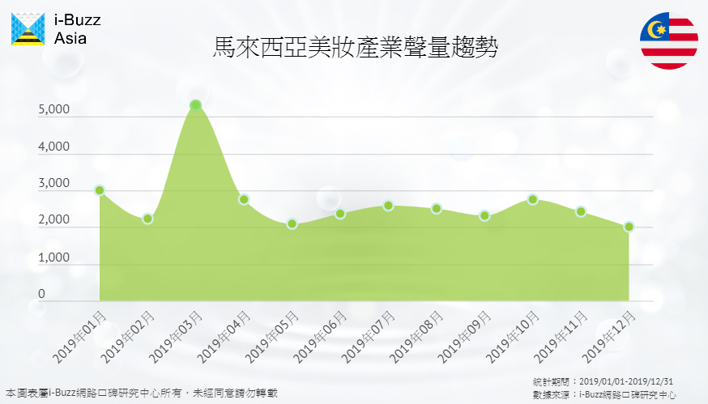

馬來西亞美保產業環境分析報告：日本美妝品表現不佳 粉底產品為落後關鍵
數據期間：2019/01/01-2019/12/31
馬來西亞（以下簡稱大馬）的美妝市場成熟且競爭激烈，單單一年的銷售額就達新台幣75.8億元，美妝品有高達六萬多種！i-Buzz Asia跨境產業研究報告發現，歐美美妝品在大馬比日本品牌更受歡迎，究竟為何台灣人所熟悉的日系美妝會在大馬市場慘遭滑鐵盧？日本品牌又應把握哪些關鍵反轉劣勢，才能與歐美品牌競逐大馬的美妝市場？
產業聲量趨勢：三八婦女節通路商大促銷 西曆和農曆新年聲量增
i-Buzz Asia跨境產業研究報告發現，眾多美妝通路在三八婦女節以回饋女性為由進行促銷活動，故3月美妝的討論聲量為全年最高。另一值得留意的檔期介於1、2月間，通路商往往會在西方和農曆新年進行年終促銷，鼓勵女性打扮靚麗迎接全新的一年，同時也因華人串門拜年的習俗，促進美妝品銷量。
產業聲量來源：IG美妝網紅行銷效應大 善用網紅影響力更吃香
從聲量來源分析來看，大馬美妝話題主要集中在社群。特別的是，社群當中以Instagram的聲量佔比超過Facebook，美妝市場走向網紅行銷趨勢越來越明顯。在馬來西亞，Facebook粉絲團則多是美妝廠商和通路商提供促銷訊息的平台，所帶起的討論聲量是具季節性的；而在Instagram上，大馬美妝網紅會直接展示使用產品的成效，露出合作品牌商品，直接吸引消費者購買，聲量較FB有持續性；而論壇則是大馬消費者討論美妝品優劣的集散地，故一商品聲譽的好壞能在論壇中體現。
產業競爭狀況：歐美品牌囊括上中下層消費群體 日本美妝品聲量表現疲弱
i-Buzz Asia跨境產業調查報告顯示，大馬美妝產業競爭激烈，與台灣日系美妝獨占鰲頭的情況不同，美國品牌佔有4成3聲量，而歐洲和日本品牌各有2成，韓國品牌緊隨在後。從平均聲量表現來看，亦是美國品牌表現最好，與日本品牌拉開一段距離。
從Top20品牌聲量中可發現日本品牌落後原因——美妝品，日本品牌在保養品表現較突出，但美妝品表現疲弱，慘輸歐美化妝品。歐美品牌產品多元且定位清晰——高端美妝品如Bobbi Brown、NARS、La Mer和Estée Lauder被置於專櫃和專賣店販售，而中端如Urban Decay和Too Faced以及低端的Maybelline在實體通路就能買到；反之日本美妝品牌的定位較高，如Shiseido和Shu Uemura售價高昂，無法打入中低端消費市場，表現較好的日本品牌如Hada Labo和SK II主要販售保養品，而非美妝品。因此，日系既無法像歐美系通吃上中下層消費階級，又過於集中於保養品的銷售，使得日本品牌在美妝市場鎩羽而歸。
產業熱門產品：粉底一物多用大馬人最愛 化妝特別重視眼部妝容
大馬消費者對美妝品的討論遠超保養品，佔美妝產業整體聲量的7成，這也是為什麼日本品牌即便在保養品表現較佳，但整體聲量仍舊輸給歐美品牌，因此日本品牌若要與歐美品牌較勁，應將更多資源投注美妝品的研發和推廣。
在美妝品中，粉底是大馬消費者最關注的品項，歐美品牌在粉底產品頗受消費者好評，因具備可持續全天的美白、防曬、控油和保濕功能，能滿足大馬消費者對產品持久度和綜合性偏好。由於大馬天氣炎熱，變化多端容易下雨，塗抹太多的美妝品顯得繁瑣且纍贅，故粉底成了出門的基本配備，若要出席正式場合，女性才會化全妝，值得注意的是，大馬女性特別注重眼部妝容，所以眼影、眼線和睫毛膏等眼妝產品也相當熱門。

產業熱門關鍵字：粉底持久、清爽、方便最重要 氣味難聞為消費者地雷
日本品牌想透過美妝品扳回一城，可透過i-Buzz Asia產業熱門關鍵字掌握消費者偏好。熱門關鍵字顯示「持久、清爽、方便」是大馬人最在意的三個關鍵，多半指的是粉底產品，是品牌不可忽視的重點；美妝品「顏色好看、顯色、展現性感」則更能獲得消費者青睞。需要注意的是，難聞為消費者的最常提及的負評，部分日系產品因氣味難聞和不自然得到負面評價，應進一步研究大馬消費者對氣味和外表觀感偏好，加以改善。
妥善經營美妝品市場 日本品牌也能力挽狂瀾
綜觀i-Buzz Asia馬來西亞跨境產業研究報告，日本品牌在大馬似乎陷入了一場苦戰，主因為日本美妝品表現不如預期，輸給歐美品牌，但日本品牌並非完全沒有機會，只要把握大馬消費者偏好，仍有機會扳回一城。
由於大馬美妝品討論多於保養品，且目前日本品牌在美妝品表現處於劣勢，日本品牌更須用心經營美妝產品，可鎖定大馬美妝品的重要品項，如粉底與眼妝產品。對於粉底產品，大馬消費者注重「持久、清爽與方便」等特性，也得小心味道難聞誤觸消費者地雷；對於眼妝產品需把握的為「顯色、顏色好看、能展現性感與魅力」。此外，若能好好善用美妝網紅影響力，在IG展現產品特性可創造品牌更大效益，日本美妝品牌有朝一日也能打敗歐美品牌！
- 01泰國美妝保養產業環境分析：遭歐美韓夾殺 日系品牌應如何挽回頹勢？
- 02馬來西亞美保產業環境分析報告：日本美妝品表現不佳 粉底產品為落後關鍵
- 03越南美保產業環境報告：把握五大關鍵要點 MIT也能與日韓品牌角逐越南市場
- 04不打價格戰！Leffe以「口味」搶攻亞洲第三大啤酒市場
- 05國際與本土品牌的對決：Foodpanda和GrabFood在大馬的勝利秘訣
- 06泰國Q4新創產業洞察：美食與金融新創為發展重點
- 07越南消費者購車看外表？機車造型好不好看決勝負
- 08不敢相信！蘋果耳機聲量竟被Sony壓著打
- 09看準印尼旅遊市場潛力 廉價航空、線上旅行社百花齊放
- 10馬來西亞手搖飲內用商機大 清真認證搶攻穆斯林客群